|
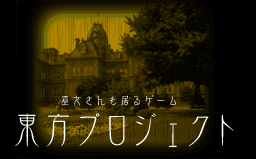 |
ここでは自作ゲームの紹介（予告）をしています 体験版の準備が出来次第、ＤＬできるようにしていきたいと思います 詳しいゲームの紹介はそれをクリックしてください |
|
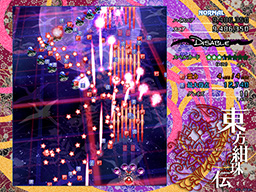 東方紺珠伝 〜 Legacy of Lunatic Kingdom. |
体験版 ver0.01b公開中 |
|
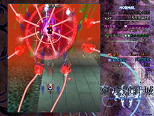 東方輝針城 〜 Double Dealing Character. |
体験版 ver0.01b公開中 |
|
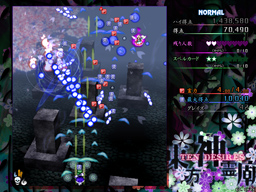 東方神霊廟 〜 Ten Desires. |
体験版 ver0.01a公開中 |
|
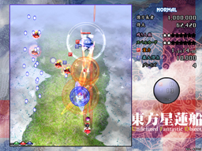 東方星蓮船 〜 Undefined Fantastic Object. |
体験版 ver0.02a公開中 |
|
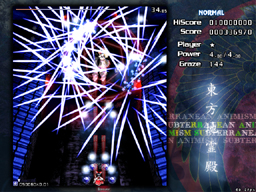 東方地霊殿 〜 Subterranean Animism. |
体験版 ver0.02a公開中 |
|
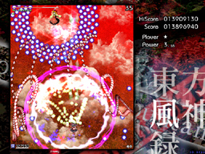 東方風神録 〜 Mountain of Faith. |
体験版 ver0.02a公開中 |
|
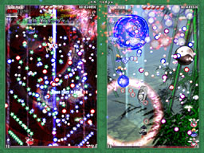 東方花映塚 〜 Phantasmagoria of Flower View. |
体験版 ver0.02a公開中 |
|
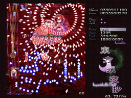 東方永夜抄 〜 Imperishable Night. |
ver 1.00dにアップデート出来ます。 体験版 ver0.03a公開中 |
|
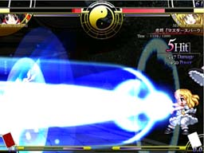 東方萃夢想 〜 Immaterial and Missing Power. |
黄昏フロンティアさんとの共同プロジェクト |
|
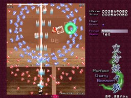 東方妖々夢 〜 Perfect Cherry Blossom. |
ver 0.11 がＤＬできます ver 1.00b にアップデート出来ます |
|
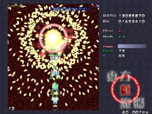 東方紅魔郷 〜 the Embodiment of Scarlet Devil. |
体験版 ver 0.13 が DL 出来ます！ ver 1.02h にアップデート出来ます |
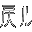